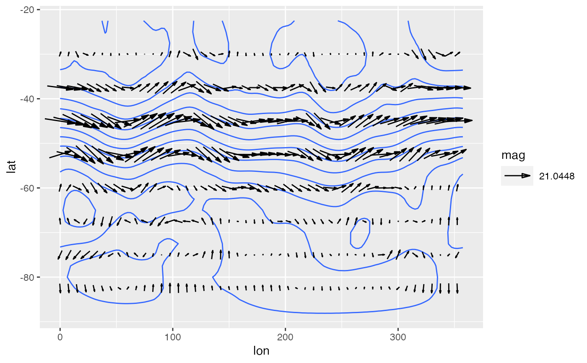

Geostrophic wind from a geopotential height field.
GeostrophicWind(gh, lon, lat, cyclical = "guess", g = 9.81, a = 6371000)
| gh | geopotential height |
|---|---|
| lon | longitude in degrees |
| lat | latitude in degrees |
| cyclical | boundary condition for longitude (see details) |
| g | acceleration of gravity |
| a | Earth's radius |
A named list with vectors for the zonal and meridional component of geostrophic wind.
If cyclical = "guess" (the default) the function will try to guess if lon
covers the whole globe and set cyclical conditions accordingly. For more
predictable results, set the boundary condition explicitly.
Other meteorology functions: Derivate,
EOF, WaveFlux,
thermodynamics, waves
data(geopotential) geopotential <- data.table::copy(geopotential) geopotential[date == date[1], c("u", "v") := GeostrophicWind(gh, lon, lat)]#> lon lat lev gh date u v #> 1: 0.0 -22.5 700 3163.839 1990-01-01 NA 1.08181190 #> 2: 2.5 -22.5 700 3162.516 1990-01-01 NA 0.55189199 #> 3: 5.0 -22.5 700 3162.226 1990-01-01 NA 0.06625043 #> 4: 7.5 -22.5 700 3162.323 1990-01-01 NA -0.29800162 #> 5: 10.0 -22.5 700 3163.097 1990-01-01 NA -0.75064329 #> --- #> 290300: 347.5 -90.0 700 2671.484 1995-12-01 NA NA #> 290301: 350.0 -90.0 700 2671.484 1995-12-01 NA NA #> 290302: 352.5 -90.0 700 2671.484 1995-12-01 NA NA #> 290303: 355.0 -90.0 700 2671.484 1995-12-01 NA NA #> 290304: 357.5 -90.0 700 2671.484 1995-12-01 NA NAlibrary(ggplot2) ggplot(geopotential[date == date[1]], aes(lon, lat)) + geom_contour(aes(z = gh)) + geom_vector(aes(dx = u, dy = v), skip = 2) + scale_mag()